| 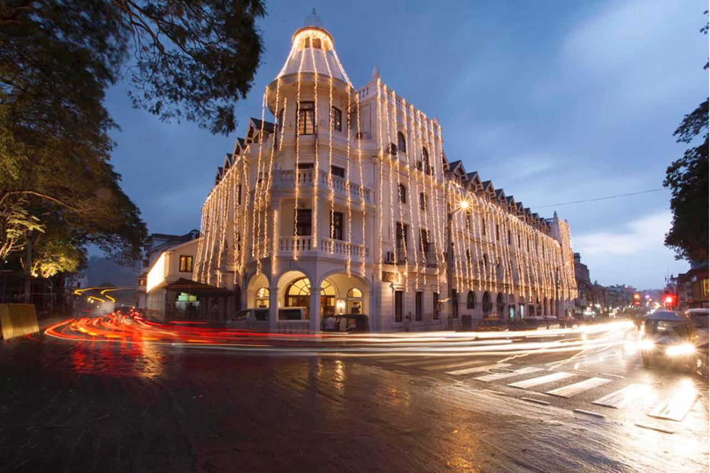 | 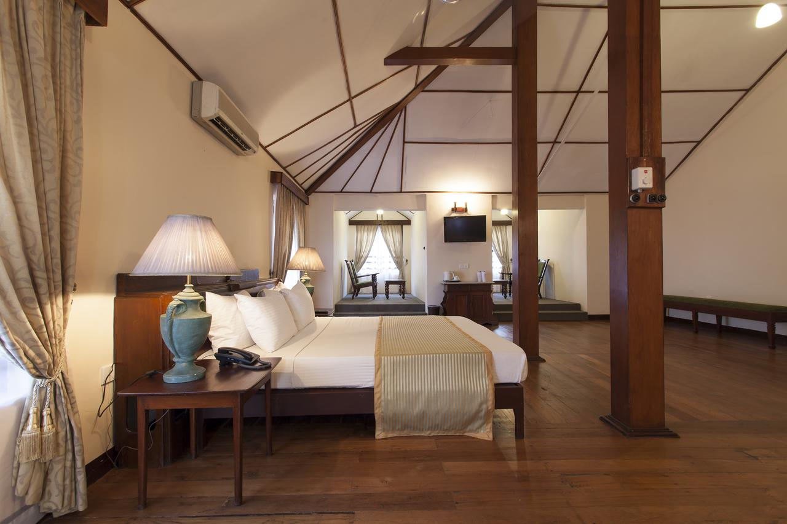 | 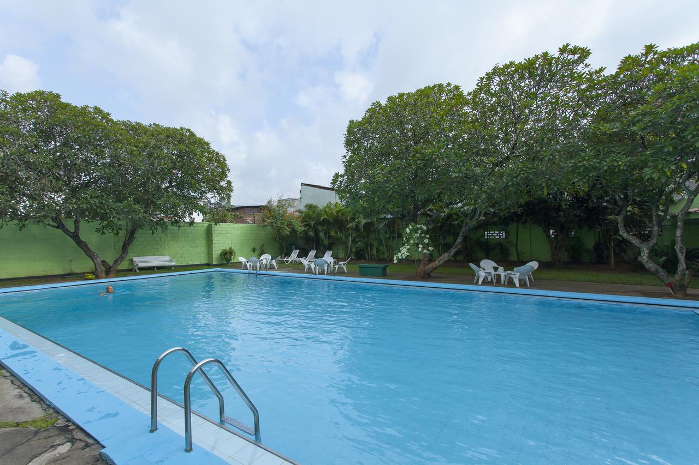 |
Queen's Hotel is housed in a historical building located 50 m from Kandy Lake. It offers colonial-style accommodation with an outdoor pool, 3 dining options and free parking on site. |
| 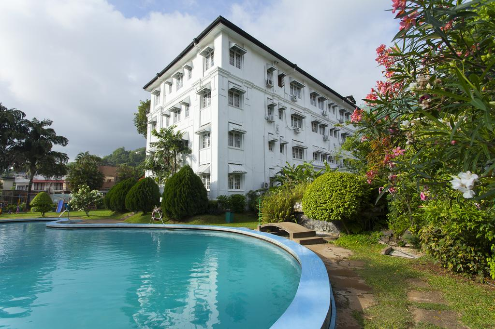 | 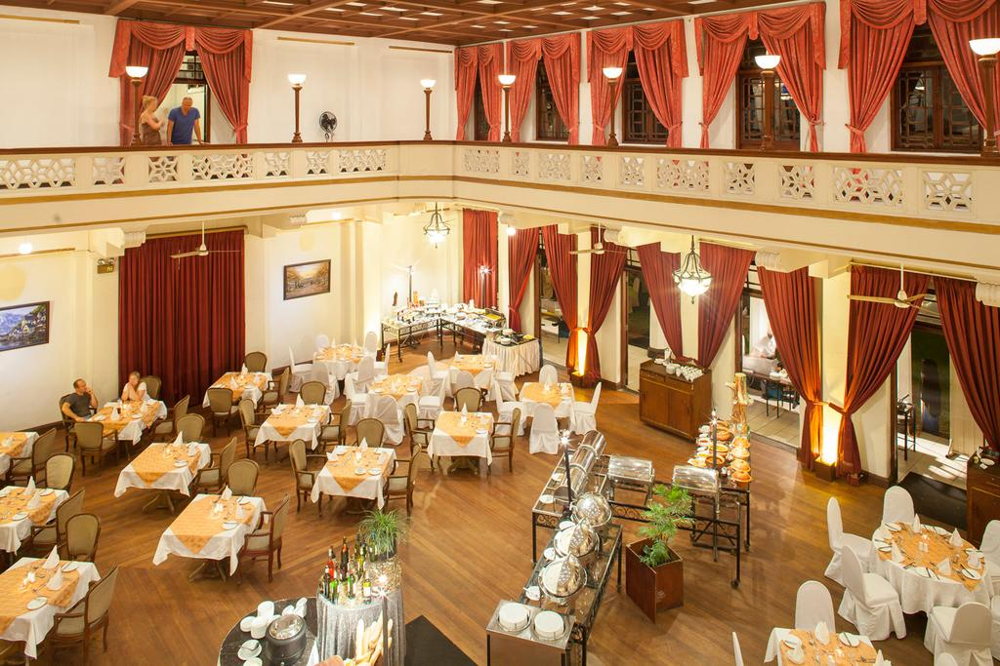 | 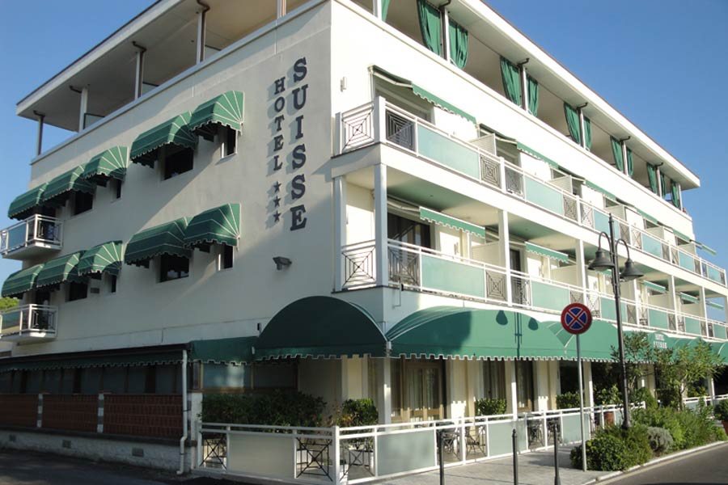 |
et on the seafront in Nice's Old Town, Hotel Suisse is an Italian-style hotel offering a partnership with a local private beach, where meals and beverages can be enjoyed for an additional charge. Guests can access the private beach for a discounted rate.
Air-conditioned guest rooms include a flat-screen TV, minibar and telephone, and most have panoramic sea views. Each room features a refined décor and has a private bathroom.
A continental breakfast is served every morning at Hotel Suisse for a supplement. Guests can enjoy drinks in the bar and lounge area while using the free WiFi access in public areas.
The hotel is 15 minutes' drive from Nice Côte d'Azur Airport. Armente Garden is a 10-minute walk away. Paid public parking is located nearby. |
| 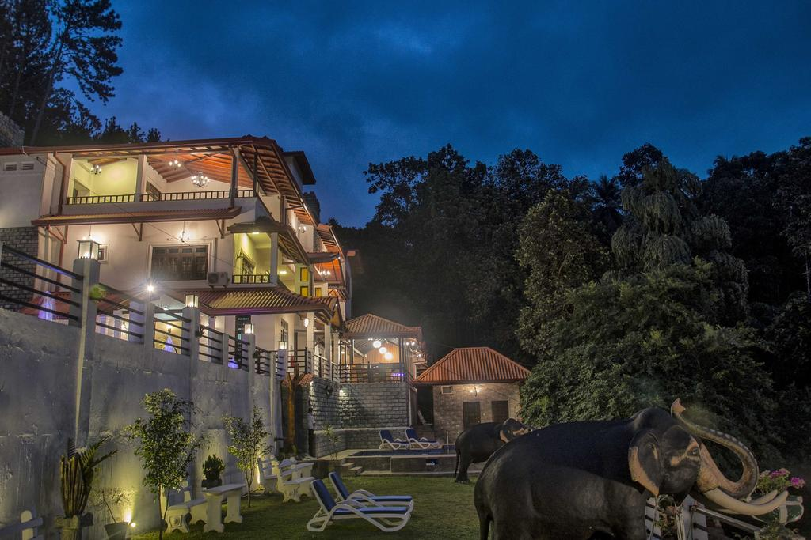 | 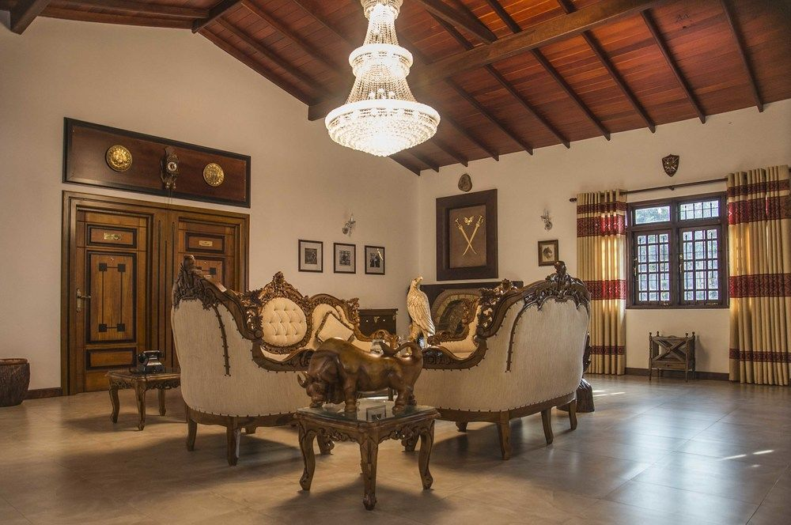 | 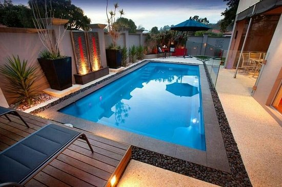 |
Situated in Kandy, 3.9 km from Ceylon Tea Museum, Eagle Regency Boutique Hotel features rooms with mountain views and free WiFi. All rooms boast a flat-screen TV with satellite channels and a private bathroom. The hotel provides river views and an outdoor pool.
All rooms in the hotel are equipped with a kettle. Eagle Regency Boutique Hotel offers some units with pool views, and each room has a terrace. All units at the accommodation include air conditioning and a desk.
The daily breakfast offers continental and buffet options. At Eagle Regency Boutique Hotel you will find a restaurant serving Chinese, European and Asian cuisine. A halal option can also be requested. |
| 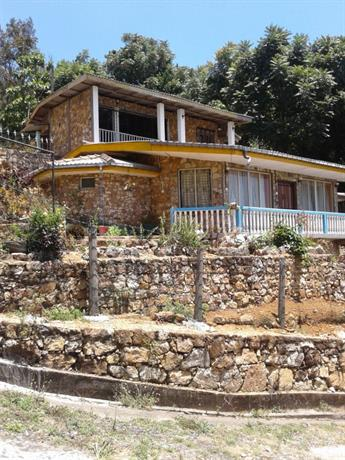 | 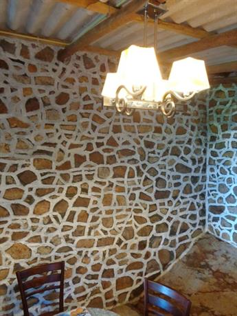 | 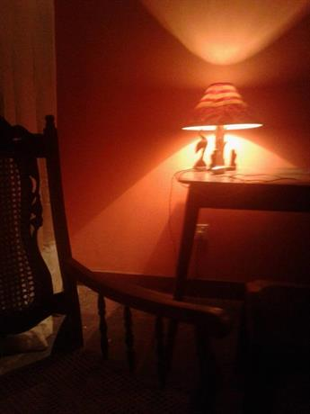 |
Located in Peradeniya, Peradeniya Homestay features accommodation with seating area. Free WiFi is offered. All units come with a terrace, a kitchen with an oven and a toaster, and a private bathroom. A fridge and kettle are also provided. Asian … |
| More Details: |
Telephone No: 0812278213 E-Mail: kandysrilankavisit@gmail.com Addres: 128/2,Yatinuwara road,kandy. Give us your feedback |
| Social Media |